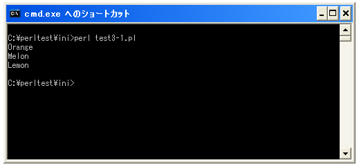

- Home ›
- Perl入門 ›
- プログラムの基本構成
コメントの記述
プログラムを記述していく上で、この部分はどんな目的でプログラムを記述していたかを残しておくと後からメンテナンスを行う上で役に立ちます。実行はされずに単に説明だけのために記述する文をコメントといいます。
Perlでコメントを記述するには「#」の後に記述します。
#コメント
文の中で「#」が現れるとそれより右側の文末までは全てコメントとなります。「#」は文の先頭に記述しその行を全てコメントとしてもいいですし、文の途中で記述してその位置より右側をコメントとしてもいいです。
# Disp Fruit Name print "Orange¥n"; # Orange print "Melon¥n"; print "Lemon¥n";
コメントはプログラムの実行時には無視されますので次のように記述したものと同じと解釈されます。
print "Orange¥n"; print "Melon¥n"; print "Lemon¥n";
複数行に渡るコメントの記述
Perlでは他のプログラミング言語のように複数行にわたってコメントを記述するための仕組みは用意されていません。その為、複数行にわたるコメントの場合も全ての行の先頭に「#」が必要です。
# Disp Fruit Name # 2008/01/22 # by Sakusha print "Orange¥n"; # Orange print "Melon¥n"; print "Lemon¥n";
Perlではコメントを書く場合には「#」しか用意されていません。ただ、コメントではないけれどコメントと同じようにプログラムの実行に影響を与えずに文字列を記述する方法があります。
POD(Plain Old Documentation)はPerlのプログラム中に(コメントよりも複雑なことが記述できる)ドキュメントを記述するための形式です。POD形式で記述されたドキュメントは別途用意されたコマンドを使ってドキュメントを整形して取り出す事が出来ます。(Javaで言うところのJavadocのようなものです)。
PODもコメントと同じようにプログラムに記述でき、プログラムの実行には影響を与えませんのでコメントの代わりにPOD形式でコメントとなる文章を記述することができます。
=pod コメント コメント =cut
「=pod」から「=cut」までの間に記述されている内容についてはプログラムは何も行いません。
純粋なコメントを記述する為には複数行であっても「#」を使った方がいいと思いますが、プログラムの一部分などをデバック中にコメントにしたりする場合には覚えておくと便利です。
サンプルプログラム
では簡単なプログラムで確認して見ます。
=pod 画面出力サンプル 2008/01/22 =cut print "Orange¥n"; #Orange print "Melon¥n"; #Melon print "Lemon¥n"; #Lemon
上記を「test3-1.pl」の名前で保存します。そしてコマンドプロンプトを起動し、プログラムを保存したディレクトリに移動してから次のように実行して下さい。

コメントが追加されているので記述された内容は増えていますが、コメントは実行時には無視されるため前のページのサンプルと実行結果は同じです。
( Written by Tatsuo Ikura )

著者 / TATSUO IKURA
初心者～中級者の方を対象としたプログラミング方法や開発環境の構築の解説を行うサイトの運営を行っています。